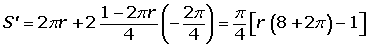
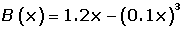

Problemas de optimización de funciones
1Obtener el triángulo isósceles de área máxima inscrito en un círculo de radio 12 cm.
2Un triángulo isósceles de perímetro 30 cm, gira alrededor de su altura engendrando un cono. ¿Qué valor debe darse a la base para que el volumen del cono sea máximo?
3Se pretende fabricar una lata de conserva cilíndrica (con tapa) de 1 litro de capacidad. ¿Cuáles deben ser sus dimensiones para que se utilice el mínimo posible de metal?
4Descomponer el número 44 en dos sumandos tales que el quíntuplo del cuadrado del primero más el séxtuplo del cuadrado del segundo sea un mínimo.
5Se tiene un alambre de 1 m de longitud y se desea dividirlo en dos trozos para formar con uno de ellos un círculo y con el otro un cuadrado. Determinar la longitud que se ha de dar a cada uno de los trozos para que la suma de las áreas del círculo y del cuadrado sea mínima.
6Hallar las dimensiones del mayor rectángulo inscrito en un triángulo isósceles que tiene por base 10 cm y por altura 15 cm.
7Hallar las dimensiones que hacen mínimo el coste de un contenedor que tiene forma de paralelepípedo rectangular sabiendo que su volumen ha de ser 9 m3 , su altura 1 m y el coste de su construcción por m2 es de 50 € para la base; 60 para la etapa y 40 para cada pared lateral.
8Recortando convenientemente en cada esquina de una lámina de cartón de dimensiones 80 cm x 50 cm un cuadrado de lado x y doblando convenientemente (véase figura), se construye una caja. Calcular x para que volumen de dicha caja sea máximo.
9Una hoja de papel debe tener 18 cm2 de texto impreso, márgenes superior e inferior de 2 cm de altura y márgenes laterales de 1 cm de anchura. Obtener razonadamente las dimensiones que minimizan la superficie del papel.
10El beneficio neto mensual, en millones de euros, de una empresa que fabrica autobuses viene dado por la función:
B(x)= 1.2x − (0.1x)3
donde x es el número de autobuses fabricados en un mes.
1 Calcula la producción mensual que hacen máximo el beneficio.
2 El beneficio máximo correspondiente a dicha producción.
11Una huerta tiene actualmente 25 árboles, que producen 600 frutos cada uno. Se calcula que por cada árbol adicional plantado, la producción de cada árbol disminuye en 15 frutos. Calcular:
1 La producción actual de la huerta.
2 La producción que se obtendría de cada árbol si se plantan x árboles más.
3 La producción a la que ascendería el total de la huerta si se plantan x árboles más.
4 ¿Cuál debe ser el número total de árboles que debe tener la huerta para qué la producción sea máxima?
12Un sector circular tiene un perímetro de 10 m. Calcular El radio y la amplitud del sector de mayor área.
- 1
- 2
- 3
- 4
- 5
- 6
- 7
- 8
- 9
- 10
- 11
- 12
Ejercicio 1 resuelto
Obtener el triángulo isósceles de área máxima inscrito en un círculo de radio 12 cm.


Ejercicio 2 resuelto
Un triángulo isósceles de perímetro 30 cm, gira alrededor de su altura engendrando un cono. ¿Qué valor debe darse a la base para que el volumen del cono sea máximo?


Ejercicio 3 resuelto
Se pretende fabricar una lata de conserva cilíndrica (con tapa) de 1 litro de capacidad. ¿Cuáles deben ser sus dimensiones para que se utilice el mínimo posible de metal?


Ejercicio 4 resuelto
Descomponer el número 44 en dos sumandos tales que el quíntuplo del cuadrado del primero más el séxtuplo del cuadrado del segundo sea un mínimo.


Ejercicio 5 resuelto
Se tiene un alambre de 1 m de longitud y se desea dividirlo en dos trozos para formar con uno de ellos un círculo y con el otro un cuadrado. Determinar la longitud que se ha de dar a cada uno de los trozos para que la suma de las áreas del círculo y del cuadrado sea mínima.




Ejercicio 6 resuelto
Hallar las dimensiones del mayor rectángulo inscrito en un triángulo isósceles que tiene por base 10 cm y por altura 15 cm.


Al tener dos triángulos semejantes se cumple que:


Ejercicio 7 resuelto
Hallar las dimensiones que hacen mínimo el coste de un contenedor que tiene forma de paralelepípedo rectangular sabiendo que su volumen ha de ser 9 m3 , su altura 1 m y el coste de su construcción por m2 es de 50 € para la base; 60 para la etapa y 40 para cada pared lateral.


Ejercicio 8 resuelto
Recortando convenientemente en cada esquina de una lámina de cartón de dimensiones 80 cm x 50 cm un cuadrado de lado x y doblando convenientemente (véase figura), se construye una caja. Calcular x para que volumen de dicha caja sea máximo.


Ejercicio 9 resuelto
Una hoja de papel debe tener 18 cm2 de texto impreso, márgenes superior e inferior de 2 cm de altura y márgenes laterales de 1 cm de anchura. Obtener razonadamente las dimensiones que minimizan la superficie del papel.


Ejercicio 10 resuelto
El beneficio neto mensual, en millones de euros, de una empresa que fabrica autobuses viene dado por la función:
B(x)= 1.2x − (0.1x)3
donde x es el número de autobuses fabricados en un mes.
1 Calcula la producción mensual que hacen máximo el beneficio.
2 El beneficio máximo correspondiente a dicha producción.


Ejercicio 11 resuelto
Una huerta tiene actualmente 25 árboles, que producen 600 frutos cada uno. Se calcula que por cada árbol adicional plantado, la producción de cada árbol disminuye en 15 frutos. Calcular:
1 La producción actual de la huerta.
Producción actual: 25 · 600 = 15 000 frutos.
2 La producción que se obtendría de cada árbol si se plantan x árboles más.
Si se plantan x árboles más, la producción de cada árbol será: 600 − 15x.
3 La producción a la que ascendería el total de la huerta si se plantan x árboles más.
P(x) = (25 + x)(600 − 15x) = −15 x2 + 225x + 1500
4 ¿Cuál debe ser el número total de árboles que debe tener la huerta para qué la producción sea máxima?
P′(x) = − 0 x + 225 − 30x + 225 = 0 x = 7.5
P′′ (x) = −30 < 0
La producción será máxima si la huerta tiene 25 + 7 = 32 o 25 + 8 = 33 árboles
Ejercicio 12 resuelto
Un sector circular tiene un perímetro de 10 m. Calcular El radio y la amplitud del sector de mayor área.


 Ejercicios
Ejercicios